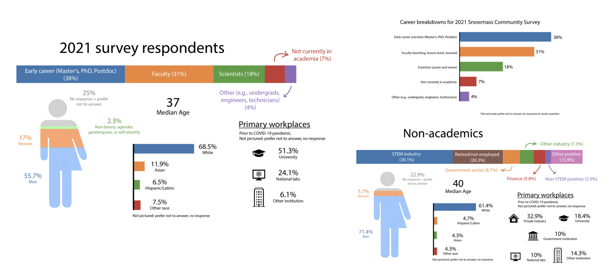
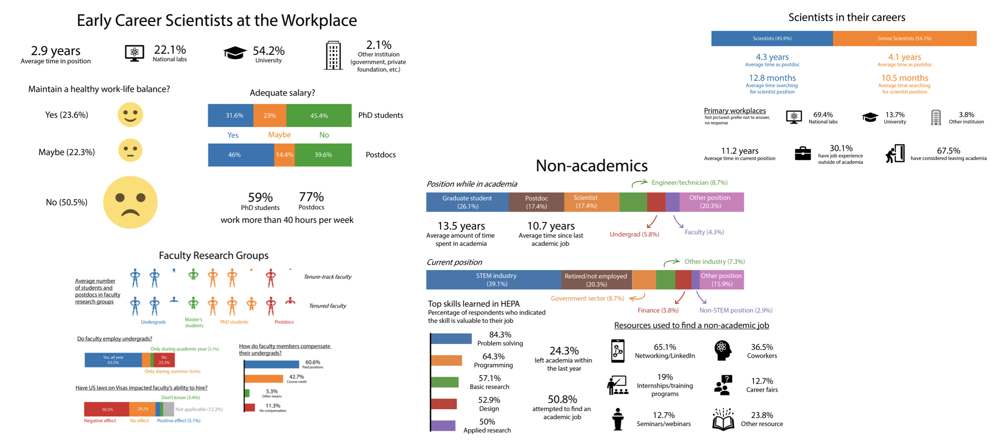

Graphics for the Snowmass 2021 Community Survey
After I helped with designing the survey, releasing it to our intended audience, and analyzing the responses, I set out to create some graphics using Adobe Illustrator.
The Survey Core Initiative team released our final report on March 14, 2022 (available here: arXiv:2203.07328 ). The culmination of our work would occur during the final conference to be held a few months later in July; our final tasks were 1) to work on any edits to the first edition of our report and 2) to put together the final presentations summarizing our findings. With the latter goal in mind, I decided to install Adobe Illustrator on my computer to produce graphics that would aid in summarizing our main findings. I wanted these figures to be informational, clear to understand, and free of as much jargon as possible. As part of our commitment to anonymizing our results, I also only included normalized statistics in the graphics. The survey team focused on grouping our respondents largely based on demographics and career stages, so I specifically focused on the demographics and career-related questions.
The demographics-based questions were an obvious place for me to start working with Adobe Illustrator since it gave me the opportunity to practice several different techniques in a pursuit toward multiple graphics. After finishing the two “overall” infographics — a simple bar chart showing the breakdown of career stages (top right), and a more complicated image with overall demographics information (left-most) — I modified the lattermost graphic to reflect the demographics information for early career scientists, faculty, laboratory scientists, and those who no longer worked in academia.
My primary contribution to the survey questions involved the career section, so I also focused on summarizing those results via infographics. We collected information such as position, workplace type, research groups, and general opinions about the workplace. I tried to represent those results in interesting ways beyond the typical bar chart; for instance, I used human figures to represent average research group sizes.
Overall, making these graphics provided me with a lot of experience in design, organization, and expressing statistics in a creative way. We also explored much more than what I talked about here in the final survey report! Here’s the link once again: arXiv:2203.07328